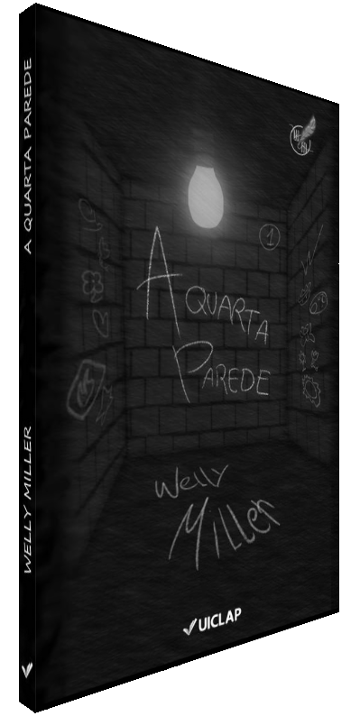

Livros da Welly

COLORIDO
PRETO & BRANCO



Isabelly, conhecida pelo seu nome artístico Welly Miller, é uma poeta, escritora e uma pessoa muito apaixonada por livros. Durante sua infância ela explorava vários tipos de habilidades até alcançar seu caminho de hoje, já optou em se tornar uma fotógrafa, que por fim não houve tanto progresso, até perceber seu dom na escrita, onde começou a trilhar seu caminho como escritora de 2021 para os dias de hoje. Foi onde explorou vários temas e gêneros, onde gêneros de romance chamou muito sua atenção, e virou um tema principal para os seus livros. Seu primeiro livro e o mais importante é A Quarta Parede, foi onde sua jornada mudou para melhor!
Aos 16 anos, Isabelly é uma jovem com um longo caminho, mas ela procura escrever vários livros!, ela acredita em suas habilidades e se esforça para alcançar seus sonhos!